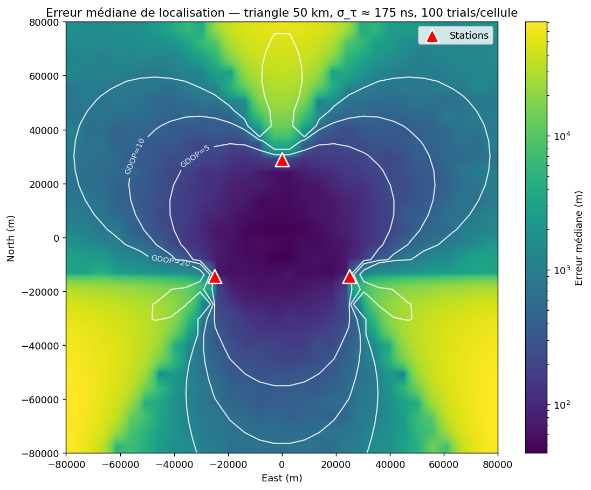
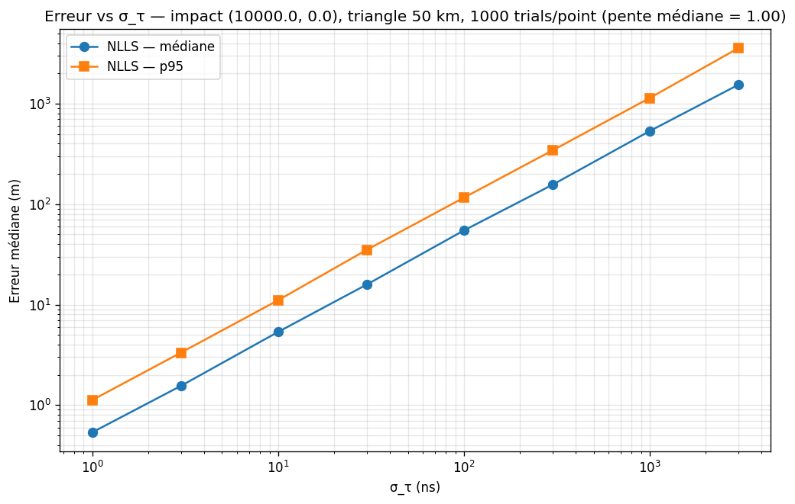
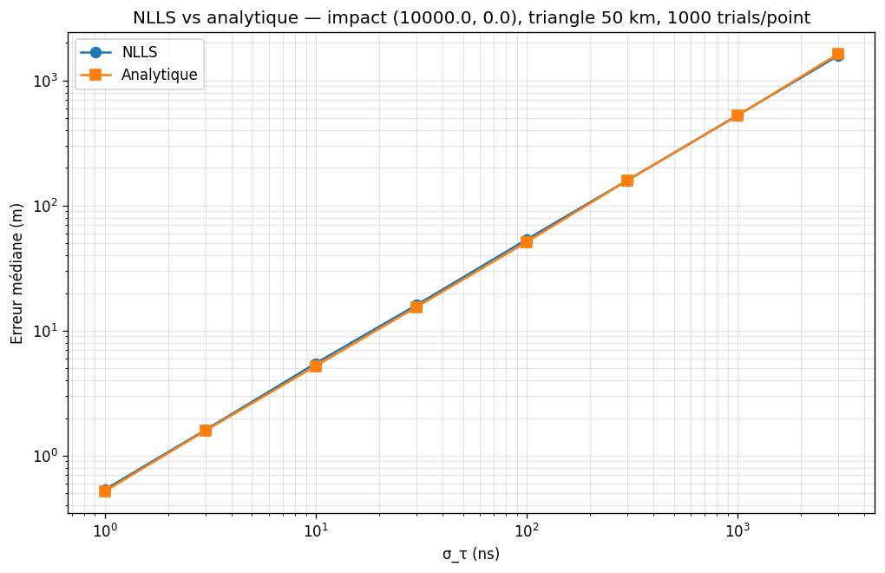
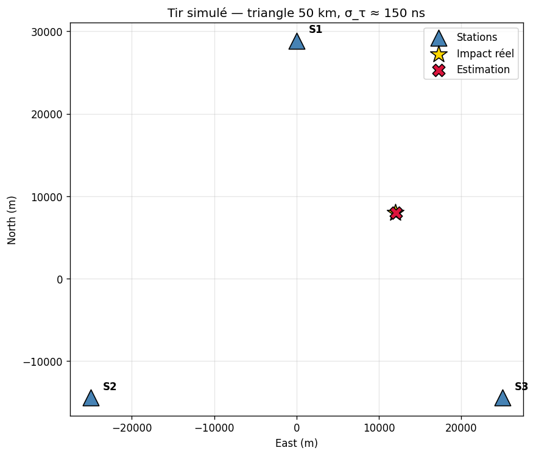

Physique / simulation
Lightning TDOA Simulator
Simulation d'un réseau VLF de détection de foudre à trois stations par multilatération TDOA et étude de la précision atteignable sous bruit contrôlé.

Contexte
À l'origine, un projet matériel : un détecteur de foudre VLF à trois nœuds, antennes cadre, cartes d'acquisition ESP32 et modules GPS pour la synchronisation temporelle. Le prototype a atteint le stade fonctionnel mais n'a jamais été finalisé, et le code d'origine n'a pas été conservé.
Ce simulateur reconstruit et formalise la partie algorithmique qui a survécu pour répondre aux questions que le prototype n'avait pas eu le temps de trancher empiriquement. Le principe tient en une phrase : trois stations horodatent l'impulsion, deux différences de temps dessinent deux hyperboles, leur intersection donne la position.
Approche
Un éclair rayonne une impulsion VLF qui se propage à ~c ; trois récepteurs synchronisés la voient arriver à des instants légèrement différents. Pour une source en p et une station en ri :
t_i = || p − r_i || / c + n_i
Le solveur travaille sur les différences de temps par rapport à une station de référence, ce qui élimine l'origine absolue. Deux solveurs sont implémentés derrière la même API : un minimisateur non linéaire aux moindres carrés (SciPy, chemin de production, extensible à N stations) et une intersection fermée des deux hyperboles (référence et contrôle).
Point de conception qui compte : solver.py n'importe pas simulator.py. Le solveur consomme un simple dict[station_id, t_arrival]. Brancher de vrais récepteurs plus tard = écrire un nouveau producteur, sans toucher au solveur.
Résultat
- Trois stations sur une base équilatérale de 50 km, bruit de 100 ns : erreur médiane ~52 m dans le triangle, < 65 m jusqu'au cercle circonscrit.
- Pente log-log essentiellement de 1 sur quatre décades : la mise à l'échelle linéaire attendue à géométrie fixe.
- Taille de réseau optimale : côté ≈ 5× le rayon de la zone à couvrir — les stations doivent être éloignées, pas regroupées.
- Les deux solveurs se suivent à moins de 5 % ; le NLLS est retenu, car il généralise à N stations.


Démo & code
La démo web est un site statique (HTML/CSS/JS + Pyodide) : la bibliothèque Python est chargée telle quelle dans le navigateur, sans portage JavaScript. On déplace les trois stations, on déclenche des orages, et on regarde le solveur travailler.
